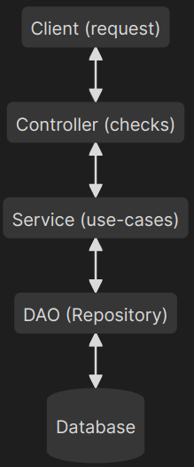

Accessing data cleanly using Node.js
Data sources?
A lot of things can be used as data sources, all kind of files such as JSON files or any kind of databases such as Postgres or caches like Redis
Here we will use a Postgres database instance running on docker
Data access architecture
To access data cleanly in any language we use the following architecture:
Access the Demo
You can access the demo here